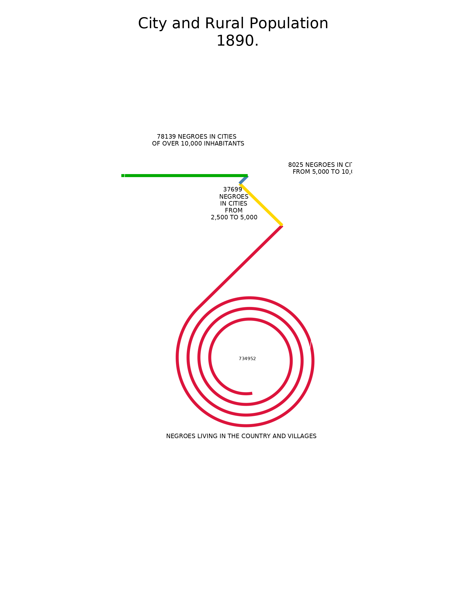
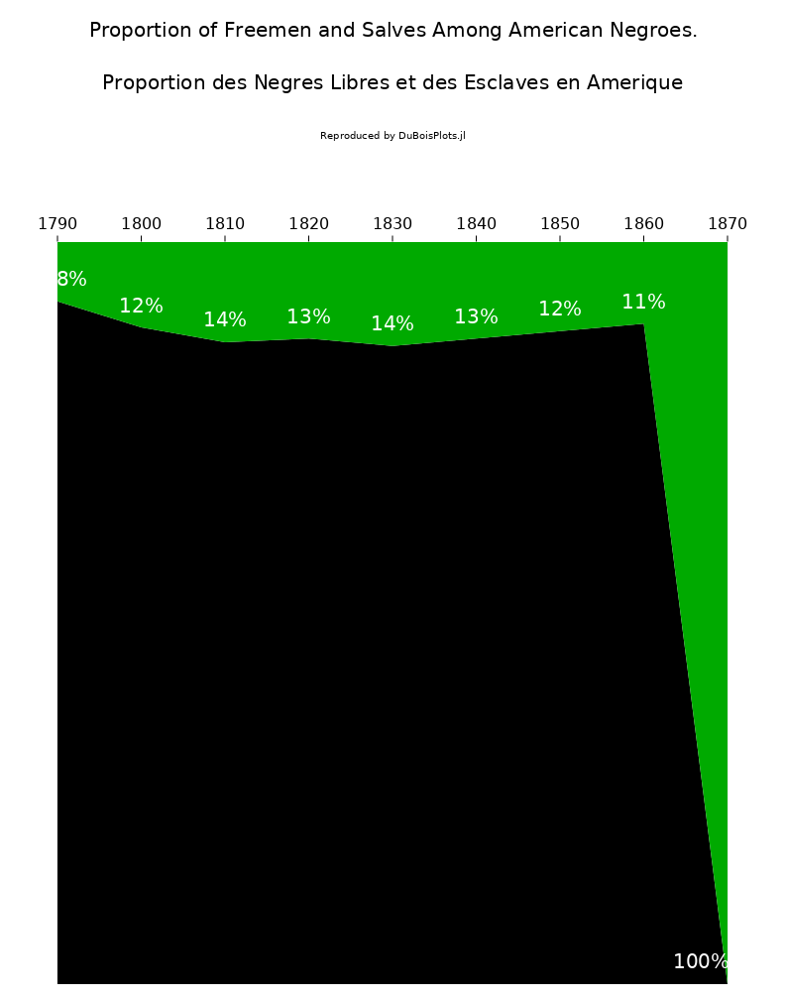

DuBoisPlots
The package exports functions PlateX(df::DataFrame,args;OptionalArgs) that are used to replicate a specific plate. In addition, it also exports all the original data in DuBoisData.PlateX. For side-by-side to comparisons for all plots see Examples.
To recreate Plates 11 and 51 you would do
using DuBoisPlots
p11 = Plate11(DuBoisData.Plate11,:Population,[-0.0,0.12], [0.09,0.1], [0.025,0.075], [0.03,-0.09], [0.035,-0.035],
"no", "City and Rural Population \n 1890.", " negroes in cities \n of over 10,000 inhabitants",
" negroes in cities \n from 5,000 to 10,000", " \n negroes \n in cities \n from \n 2,500 to 5,000",
" Negroes living in the country and villages")
p51 = Plate51(DuBoisData.Plate51, :Year;
title="Proportion of Freemen and Salves Among American Negroes.",
small_title="Proportion des Negres Libres et des Esclaves en Amerique",
subtitle="Reproduced by DuBoisPlots.jl")┌ Warning: If you need to see axes to place labels, set value to 'yes'.
└ @ DuBoisPlots ~/work/DuBoisPlots.jl/DuBoisPlots.jl/src/Recipes/Plate11.jl:38| Plate 11 | Plate 51 |
|---|---|
|  |  |
Index
DuBoisPlots.Plate10DuBoisPlots.Plate11DuBoisPlots.Plate25DuBoisPlots.Plate51DuBoisPlots.Plate53DuBoisPlots.Plate7
Automatic docs
DuBoisPlots.Plate10 — FunctionReplicates Plate 10 (Stacked and Grouped Bar Charts).
You must pass a DataFrame with five columns. The first column will be the main_cat argument in the function below. It should take as many values as you will have groups of bar charts. In the example, it takes three values, resulting in 3 groups of stacked charts. This column should be ordered [a a b b c c].
The second column will be the sub_cat argument – the sub-category. This column can only take two values. These values will correspond with the two bars in each group. In the example, there are two bars in each group (with three groups, six total bars). This column should be ordered [a b a b a b].
The rest of the columns will take numeric values. There should be one column per component of each stacked bar chart. For example, if the bar charts have three components, there will be three columns corresponding to each component. Each row of these columns should sum to 1 or 100. A maximum of three columns can be passed. If values are decimals, multiply them by 100 before running this function.
The "range" argument should take a range of integers (1:2, 4:5) which correspond to the indexes of the columns with numeric values.
The main_labs argument should be an array of strings (Array{String,1}) which correspond to the main_cat argument. This creates the labels for each set of grouped bars.
The sub_labs argument should be an array of strings (Array{String,1}) which correspond to the sub_cat argument. This creates the labels for each bar in each group.
The orders of the strings in both of these arrays matter!
df = DataFrame(main=["ab","ab","bc","bc","cd","cd"],sub=["a","b","a","b","a","b"],x1=[65,55,65,55,65,55,],x2 = [25,35,25,35,25,35],x3 = [10,10,10,10,10,10])
Plate10(df, :main, :sub,3:5, ["ab", "bc","cd"],["a","b"],["x1","x2","x3"], "title")DuBoisPlots.Plate11 — FunctionReplicates Plate 11 (Unusual line chart).
You must pass a DataFrame two columns. The first column should be strings with the names of each category in the data. The second column should be numeric values corresponding to each of those categories. There can only be 4 rows (maximum of 4 categories).
data = CSV.read(joinpath(@__DIR__,"../../data/original/Plate11.csv"),DataFrame)
z = Plate11(data, :Population,[-0.0,0.12], [0.09,0.1], [0.025,0.075], [0.03,-0.09], [0.035,-0.035],
"no", "City and Rural Population
1890.", " negroes in cities
of over 10,000 inhabitants",
" negroes in cities
from 5,000 to 10,000", "
negroes
in cities
from
2,500 to 5,000",
" Negroes living in the country and villages")DuBoisPlots.Plate25 — FunctionReplicates Plate 25 (Spiral line chart).
You must pass a DataFrame with two columns. You must specify the column symbol for both columns – spiral should be the label for each variable, and len should be the numeric value for each variable
df = DataFrame(Year = 1:6, Value = rand(6))
Plate25(df, :Year, :Value, "Title")DuBoisPlots.Plate51 — MethodReplicates Plate 51 (Stacked Area Chart).
You must pass a DataFrame with three columns. The first column will specify the x axis – this would be time or a similar parameter. Specify this column with the y_var argument. The second and third columns denote two categories which must sum to 100.
Labels are optional arguments which can be passed as strings (title, subtitle, and labels for each of the two categories). If no value is passed for the lab1_pos and lab2_pos arguments, which are positions for each of the labels, then they will be automatically placed at (0,0), where they will likely not be seen. In order to place them yourself, pass an ordered pair of numbers for each.
df = DataFrame(t=[1,2],x1=[25,35],x2=[75,65])
Plate51(df,:t, title = "Title", small_title = "Small Title", subtitle = "Subtitle", lab_1_name = "Label 1",
lab_2_name = "Label 2", lab_1_pos = (1.5,20), lab_2_pos = (1.5,80))DuBoisPlots.Plate53 — MethodReplicates Plate 53 (Violin Chart).
This is a violin chart which is effectively made of two symmetric charts. The second column of the dataframe and y_var argument should be the categories that define those two plots. The first column of the dataframe and :cat_var argument should be the sub-categories within the plots; they will be the different colored regions within the chart area.
The remaining columns will be the values in each region. A number of things are important here. First, each row of these columns should sum to 100 or 1.0. Second, the way this chart works is that they are effectively horizontal stacked bar charts with mirrored x axes. There are as many bars as unique values in the sub-category column.
The label positions are coded such that they can either be manually or automatically positioned in each plot. To manually plot them, submit the string "Auto" as the value for each of the position inputs. To automatically create a legend instead of plotted labels, submit the string "Legend". Case-sensitive.
In order to position them manually, submit two arrays for the values of labpos1 and labpos2. They are required inputs that take floats or integers as elements in the arrays. The arrays need to have two columns each and as many rows as there are categories. As such, it's important that the coordinates be ordered in the same order as symbvec. For example: If `symbvec = [:a :b], the order of the coordinates with respect to the categories they belong to should look like this:[aplot1x aplot1y;bplot1x bplot1y]and[aplot2x aplot2y;bplot2x bplot2y]`. In order to manually position the labels, simply input those points (coordinates).
r = DataFrame(y_var = repeat(["A", "B", "C", "D","E","F"],2),
cat_var = cat(repeat(["G"],6),repeat(["H"],6), dims = (1,1)),
x1 = (rand(1:10, 12).+20),
x2 = (rand(1:10, 12).+10),
x3 = (rand(1:10, 12).+5),
x4 = (rand(1:10, 12).+2))
r.x5 = (100 .- (r.x1 + r.x2 + r.x3 + r.x4))
Plate53(r, :y_var, :cat_var, [:x1, :x2, :x3, :x4, :x5], "Auto", "Auto", title_1 = "Title",
title_2 = "Small Title", subtitle = "Subtitle", bot_lab = "Label")DuBoisPlots.Plate7 — MethodReplicates Plate 7 (Flipped Time Series).
You must pass a DataFrame with at least two columns. You must specify the column symbol for the x-axis variable. Note that if you are trying to plot more than 8 lines the colors and patterns will repeat – so, functionally, you should only plot up to 8 variables.
df = DataFrame(t=[1,2],x1=[25,35],x2=[75,65])
Plate7(df,:t)